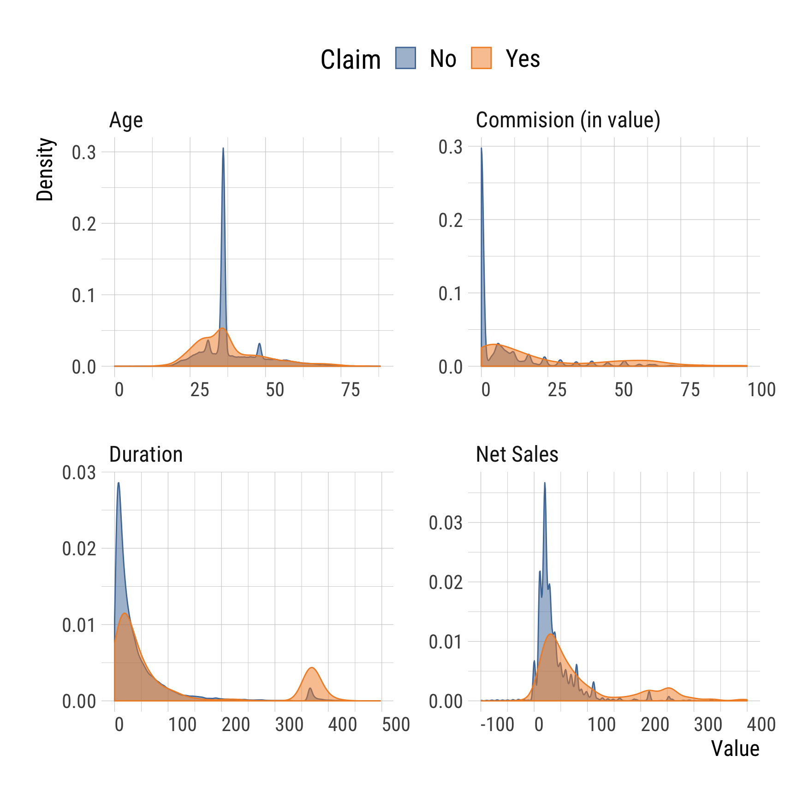
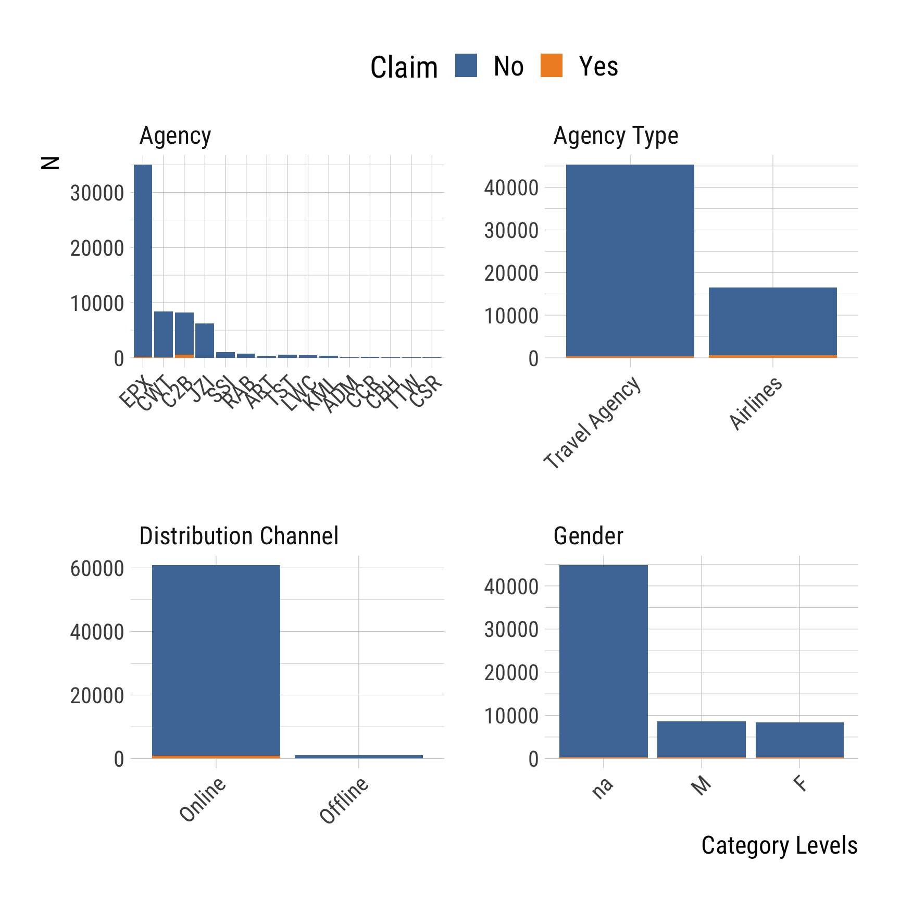
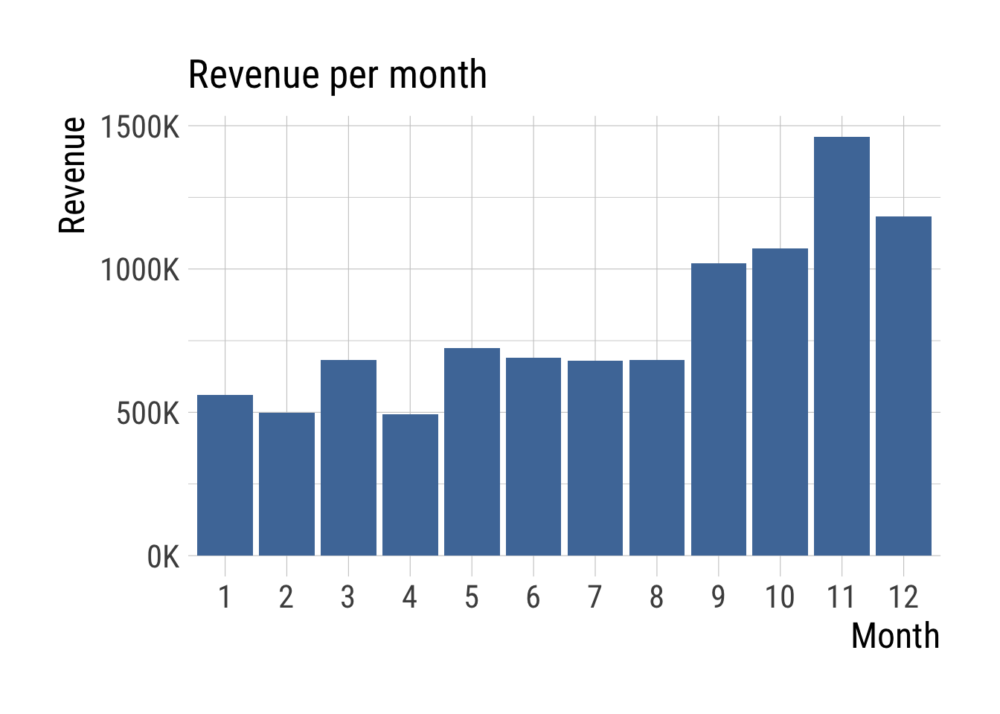
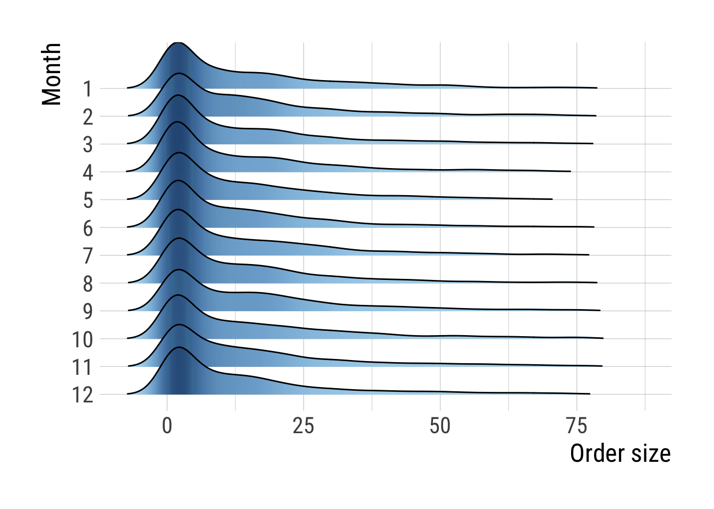
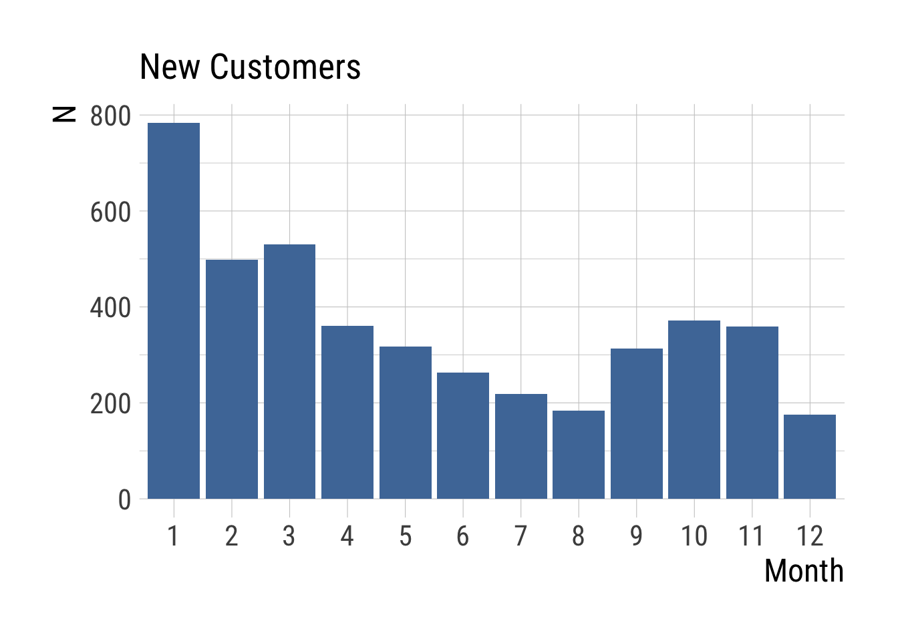
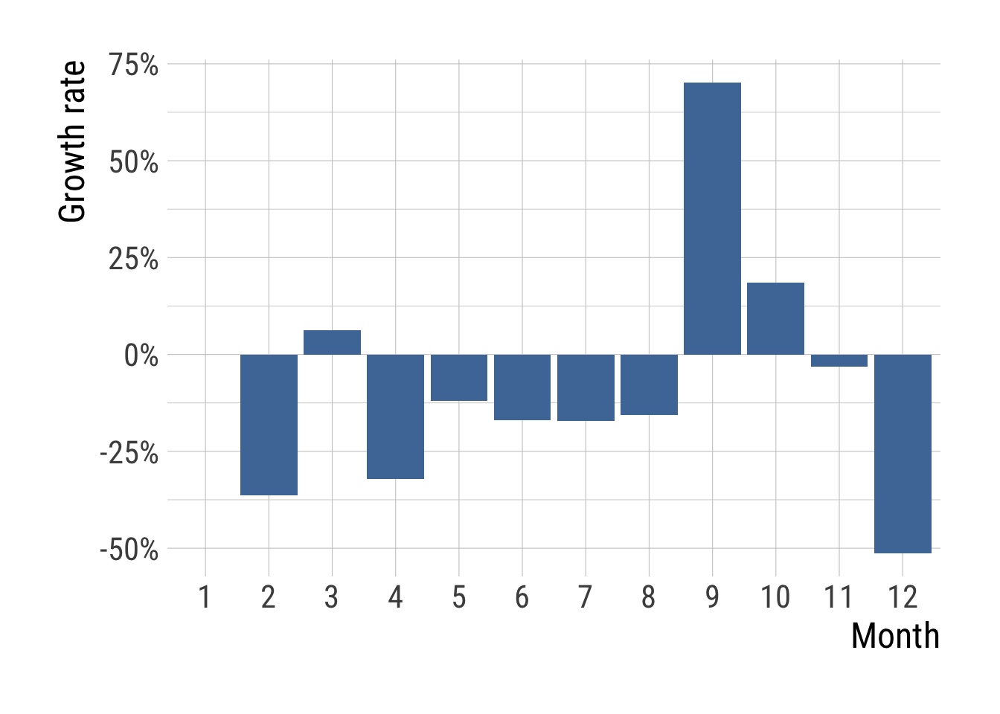
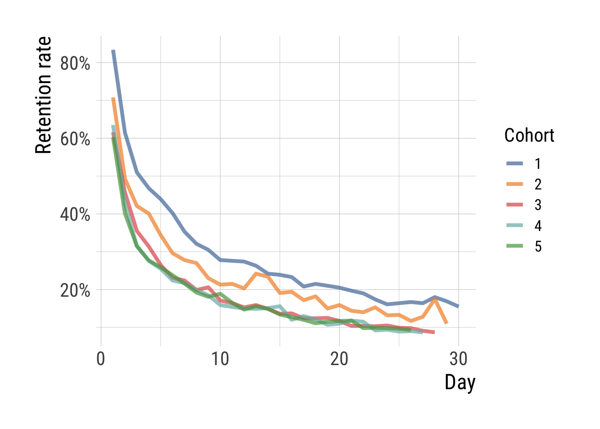
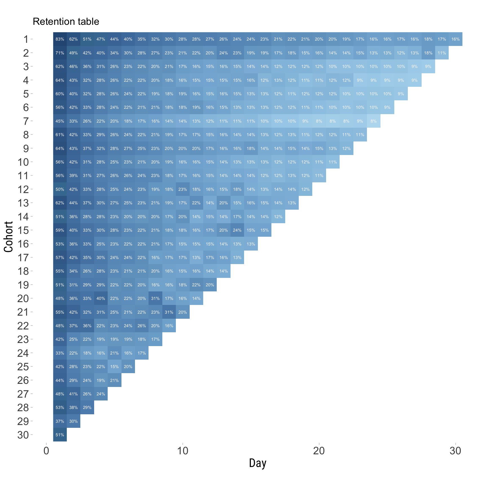

Chapter 2 Describe
This chapter provides code for exploring characteristics of datasets and recipes for calculating and plotting simple descriptive statistics and key performance indicators, or KPIs, commonly used to keep track of business performance and customer relations.
To run the code for this chapter, you will need to install and load the following packages.
library(tidyverse)
library(readxl)
library(ggridges)
library(lubridate)
library(hrbrthemes)
library(scales)
library(ggthemes)
# ggplot theme
theme_set(theme_ipsum_rc(
axis_title_size = 18,
strip_text_size = 18,
base_size = 16,
plot_title_size = 20
))2.1 Exploratory analysis
There are many useful R packages that can help us get a quick overview of the characteristics of new datasets. Here, we’ll create plots to show the distribution of numeric variables and count the tokens of categorical variables. Moreover, in this dataset containing information about travel insurance claims, we also want to check if claims might be related to other variables.
| Agency | Agency Type | Distribution Channel | Product Name | Claim | Duration | Destination | Net Sales | Commision (in value) | Gender | Age |
|---|---|---|---|---|---|---|---|---|---|---|
| CBH | Travel Agency | Offline | Comprehensive Plan | No | 186 | MALAYSIA | -29.0 | 9.57 | F | 81 |
| CBH | Travel Agency | Offline | Comprehensive Plan | No | 186 | MALAYSIA | -29.0 | 9.57 | F | 71 |
| CWT | Travel Agency | Online | Rental Vehicle Excess Insurance | No | 65 | AUSTRALIA | -49.5 | 29.70 | NA | 32 |
| CWT | Travel Agency | Online | Rental Vehicle Excess Insurance | No | 60 | AUSTRALIA | -39.6 | 23.76 | NA | 32 |
We first select and plot the numeric variables in individual density plots by facetting the variables.
num_vars <- insurance %>%
select_if(is.numeric) %>%
names()
insurance %>%
select(Claim, num_vars) %>%
gather(variable, value, -Claim) %>%
ggplot(aes(x = value, fill = Claim, colour = Claim)) +
facet_wrap(~variable, scales = "free", ncol = 2) +
geom_density(alpha = 0.5) +
theme(
axis.text.x = element_text(angle = 0, hjust = 0),
legend.position = "top",
legend.text = element_text(size = 20),
legend.title = element_text(size = 22)
) +
scale_color_tableau() +
scale_fill_tableau() +
labs(x = "Value", y = "Density")
We can then do the same for categorical variables leaving out Product Name and Destination, since these variables have too many category levels to plot in this way.
insurance %>%
select_if(is.character) %>%
select(-`Product Name`, -Destination) %>%
gather(variable, value, -Claim) %>%
mutate(value = ifelse(is.na(value), "na", value)) %>%
count(Claim, variable, value) %>%
ggplot(aes(x = reorder(value, -n), y = n, fill = Claim)) +
facet_wrap(~variable, ncol = 2, scales = "free") +
geom_bar(stat = "identity") +
theme(
axis.text.x = element_text(angle = 45, hjust = 1),
legend.position = "top",
legend.text = element_text(size = 20),
legend.title = element_text(size = 22)
) +
labs(x = "") +
scale_fill_tableau() +
labs(x = "Category Levels", y = "N")
2.2 Key performance indicators
The dataset we’ll be using to calculate KPIs consists of transactional data from an online retail store between December 2010 and December 2011 with unique IDs for invoices and customers. We’ll also create variables for the total amounts spent and month (1 to 12).
retail <- read_excel("Data/retail.xlsx") %>%
mutate(
TotalAmount = Quantity * UnitPrice,
Month = month(InvoiceDate)
)| InvoiceNo | StockCode | Description | Quantity | InvoiceDate | UnitPrice | CustomerID | Country | TotalAmount | Month |
|---|---|---|---|---|---|---|---|---|---|
| 536365 | 85123A | WHITE HANGING HEART T-LIGHT HOLDER | 6 | 2010-12-01 08:26:00 | 2.55 | 17850 | United Kingdom | 15.30 | 12 |
| 536365 | 71053 | WHITE METAL LANTERN | 6 | 2010-12-01 08:26:00 | 3.39 | 17850 | United Kingdom | 20.34 | 12 |
| 536365 | 84406B | CREAM CUPID HEARTS COAT HANGER | 8 | 2010-12-01 08:26:00 | 2.75 | 17850 | United Kingdom | 22.00 | 12 |
| 536365 | 84029G | KNITTED UNION FLAG HOT WATER BOTTLE | 6 | 2010-12-01 08:26:00 | 3.39 | 17850 | United Kingdom | 20.34 | 12 |
There are dozens of well-known KPIs commonly used to track various aspects of a company’s performance and choosing the relevant metrics is essential to obtain meaningful results. The below examples demonstrate how to calculate and visualize information about sales and customers.
First, we’ll create a plot showing the total revenue for each month.
retail %>%
group_by(Month) %>%
summarise(Revenue = sum(TotalAmount)) %>%
ggplot(aes(factor(Month), Revenue)) +
geom_col(fill = "#4E79A7") +
ggtitle("Revenue per month") +
scale_y_continuous(labels = function(n) {
trans <- n / 1000
paste0(trans, "K")
}) +
labs(x = "Month")
We can then calculate the mean and median order size and amount spent per purchase in the following way.
orders <- retail %>%
group_by(InvoiceNo) %>%
count() %>%
ungroup() %>%
summarise(
mean_order_size = mean(n),
median_order_size = median(n)
)
amounts <- retail %>%
group_by(InvoiceNo) %>%
summarise(sum = sum(TotalAmount)) %>%
summarise(
mean_amount = mean(sum),
median_amount = median(sum)
)
cbind(orders, amounts)## mean_order_size median_order_size mean_amount median_amount
## 1 20.92313 10 376.3609 207.535We may also want to know whether e.g. order sizes change over time. In this dataset, the per-month distributions look identical.
retail %>%
group_by(Month, InvoiceNo) %>%
count() %>%
ungroup() %>%
mutate(Month = factor(Month, levels = rev(1:12))) %>%
filter(n < 80) %>%
ggplot(aes(x = n, y = Month, fill = ..density..)) +
geom_density_ridges_gradient(rel_min_height = 0.01) +
scale_fill_gradient_tableau(guide = F) +
labs(x = "Order size")
We can also calculate the revenue per customer to get an idea of how much one customer is worth to the company (in a one-year period).
retail %>%
group_by(CustomerID) %>%
summarise(Revenue = sum(TotalAmount)) %>%
summarise(
mean = mean(Revenue),
median = median(Revenue)
)## # A tibble: 1 x 2
## mean median
## <dbl> <dbl>
## 1 2229. 648.Acquiring new customers is important to any business, and we can measure performance in this area by looking at the number of new customers acquired in each month.
retail %>%
group_by(CustomerID) %>%
summarise(Min_month = min(Month)) %>%
mutate(Min_month = factor(Min_month, levels = 1:12)) %>%
count(Min_month) %>%
ggplot(aes(Min_month, n)) +
geom_col(fill = "#4E79A7") +
labs(x = "Month", y = "N", title = "New Customers")
In addition, we may want to know the growth rate comparing the percentage of new customers for each month with previous months.
retail %>%
group_by(CustomerID) %>%
summarise(Min_month = min(Month)) %>%
mutate(Min_month = factor(Min_month, levels = 1:12)) %>%
count(Min_month) %>%
mutate(Growth_Rate = (n - lag(n)) / lag(n) * 100) %>%
ggplot(aes(Min_month, Growth_Rate)) +
geom_col(fill = "#4E79A7") +
scale_y_continuous(labels = percent_format(scale = 1, accuracy = 1)) +
labs(x = "Month", y = "Growth rate")
2.3 Retention and cohorts
We have just examined the acquisition of new customers over time. Another important aspect of customer valuation is the retention rate, which we’ll measure for customers acquired at different times. These groups are called cohorts.
We’ll use a large dataset from a mobile game where each “event” is a new player signing up or starting a new game between April 27th and May 27 2016. We then calculate the percentage of players that kept playing the game for each day of the period.
| userid | eventDate | eventName |
|---|---|---|
| 44fd19c9677cf444344aa20a401e4c1e6b4a7acff25ec3e760bb4b56cf39264d | 2016-04-27 | newPlayer |
| 8fc139bff4fb52ae82dbd94117fb93994b2ae4db3e1a5504335e6426913545d6 | 2016-04-27 | newPlayer |
| 598d1d6f6d157f02b132d718ed97d018d32e65f228f5f343e83f3e0c1d3b3c48 | 2016-04-27 | newPlayer |
| d00f4d6464017cabd71bc148cdfda00e4e409ce951b5b54b32db5c5a164f7a48 | 2016-04-27 | newPlayer |
| 14f7dac689689de1c1674e870d6c8f7c8ba9d98d49e5e010ac68dc405b194d1a | 2016-04-27 | newPlayer |
| fcd4a1cef58885588e5c0932587fe9472bc0b0994971aa8d8f196908daa77891 | 2016-04-27 | newPlayer |
| 1a44cee016a19840ee61769559c05c8c82306d6736bf55c29944993ac7215340 | 2016-04-27 | newPlayer |
| d9aa065e05f8e1ab9939a4cea496d39cdbbff4e3b4f4e0239dafdd9549bdf375 | 2016-04-27 | newPlayer |
We have 31 days in the data, and we will start by findings the first observation for each player and count the number of active players for each day.
cohorts <- cohorts %>%
group_by(userid) %>%
mutate(first = min(eventDate)) %>%
group_by(first, eventDate) %>%
summarise(Players = n()) %>%
pivot_wider(names_from = eventDate, values_from = Players) %>%
ungroup() %>%
mutate(first = as.character(seq(1, n_distinct(first)))) %>%
data.frame()| first | X2016.04.27 | X2016.04.28 | X2016.04.29 | X2016.04.30 | X2016.05.01 | X2016.05.02 | X2016.05.03 | X2016.05.04 | X2016.05.05 | X2016.05.06 | X2016.05.07 | X2016.05.08 | X2016.05.09 | X2016.05.10 | X2016.05.11 | X2016.05.12 | X2016.05.13 | X2016.05.14 | X2016.05.15 | X2016.05.16 | X2016.05.17 | X2016.05.18 | X2016.05.19 | X2016.05.20 | X2016.05.21 | X2016.05.22 | X2016.05.23 | X2016.05.24 | X2016.05.25 | X2016.05.26 | X2016.05.27 |
|---|---|---|---|---|---|---|---|---|---|---|---|---|---|---|---|---|---|---|---|---|---|---|---|---|---|---|---|---|---|---|---|
| 1 | 39795 | 33198 | 24474 | 20315 | 18640 | 17486 | 16007 | 14031 | 12769 | 12141 | 11057 | 11002 | 10885 | 10449 | 9613 | 9503 | 9277 | 8275 | 8573 | 8362 | 8166 | 7847 | 7548 | 6927 | 6400 | 6512 | 6648 | 6523 | 7158 | 6720 | 6153 |
| 2 | NA | 87649 | 62050 | 43212 | 36885 | 35122 | 30123 | 25923 | 24357 | 23649 | 20202 | 18667 | 18822 | 17835 | 21225 | 20541 | 16732 | 17032 | 15098 | 15919 | 13186 | 13933 | 12643 | 12308 | 13372 | 11569 | 11693 | 10252 | 11229 | 15382 | 9621 |
| 3 | NA | NA | 193942 | 119533 | 88683 | 68869 | 60833 | 51484 | 44784 | 43537 | 38547 | 39972 | 33080 | 31757 | 29581 | 30848 | 28841 | 26360 | 26558 | 23956 | 24042 | 24219 | 22703 | 20085 | 20164 | 19934 | 20383 | 19176 | 19054 | 17735 | 16933 |
| 4 | NA | NA | NA | 228748 | 145287 | 97955 | 72147 | 63073 | 58312 | 51348 | 49665 | 45572 | 42299 | 36318 | 35209 | 34365 | 34019 | 34584 | 35736 | 27342 | 29698 | 27576 | 24567 | 25125 | 26887 | 26293 | 20998 | 21462 | 20351 | 20700 | 19789 |
| 5 | NA | NA | NA | NA | 235200 | 141720 | 94245 | 74089 | 65052 | 60847 | 55973 | 50902 | 45239 | 42592 | 44384 | 38724 | 34612 | 36641 | 34931 | 31553 | 29910 | 28341 | 26168 | 27112 | 27521 | 27682 | 22954 | 23237 | 23112 | 22708 | 21979 |
| 6 | NA | NA | NA | NA | NA | 207924 | 116503 | 86887 | 68433 | 57301 | 50973 | 46334 | 43704 | 44130 | 36908 | 38362 | 40111 | 33372 | 31329 | 27734 | 26603 | 26291 | 24290 | 24233 | 23418 | 22382 | 21501 | 20612 | 21385 | 19861 | 19576 |
| 7 | NA | NA | NA | NA | NA | NA | 232965 | 104470 | 76100 | 61468 | 52179 | 45700 | 41519 | 39429 | 36819 | 33470 | 31665 | 29669 | 27588 | 26472 | 25722 | 25752 | 23646 | 22172 | 22033 | 20598 | 19733 | 19322 | 19745 | 20087 | 17400 |
| 8 | NA | NA | NA | NA | NA | NA | NA | 185999 | 112720 | 78601 | 61730 | 54094 | 47970 | 44680 | 40154 | 38411 | 35093 | 32177 | 31140 | 28708 | 29254 | 26570 | 26655 | 24394 | 23120 | 23358 | 20890 | 21760 | 22817 | 20764 | 20191 |
To get the data into the right format for plotting, we need to shift column positions, which we can do in the following way.
cohorts_shifted <- cohorts # create new data frame from 'cohorts'
ncols_total <- ncol(cohorts_shifted) # count number of columns in data set
for (i in 1:nrow(cohorts_shifted)) { # for loop for shifting each row
row <- cohorts_shifted[i, ] # select row from data frame
row <- row[, !is.na(row[])] # remove columns with zeros
ncols <- ncol(row) # count number of columns in row
if (ncols < ncols_total) { # fill columns after values by zeros
row[, c((ncols + 1):ncols_total)] <- 0
}
cohorts_shifted[i, ] <- row # replace initial row
}| first | X2016.04.27 | X2016.04.28 | X2016.04.29 | X2016.04.30 | X2016.05.01 | X2016.05.02 | X2016.05.03 | X2016.05.04 | X2016.05.05 | X2016.05.06 | X2016.05.07 | X2016.05.08 | X2016.05.09 | X2016.05.10 | X2016.05.11 | X2016.05.12 | X2016.05.13 | X2016.05.14 | X2016.05.15 | X2016.05.16 | X2016.05.17 | X2016.05.18 | X2016.05.19 | X2016.05.20 | X2016.05.21 | X2016.05.22 | X2016.05.23 | X2016.05.24 | X2016.05.25 | X2016.05.26 | X2016.05.27 |
|---|---|---|---|---|---|---|---|---|---|---|---|---|---|---|---|---|---|---|---|---|---|---|---|---|---|---|---|---|---|---|---|
| 1 | 39795 | 33198 | 24474 | 20315 | 18640 | 17486 | 16007 | 14031 | 12769 | 12141 | 11057 | 11002 | 10885 | 10449 | 9613 | 9503 | 9277 | 8275 | 8573 | 8362 | 8166 | 7847 | 7548 | 6927 | 6400 | 6512 | 6648 | 6523 | 7158 | 6720 | 6153 |
| 2 | 87649 | 62050 | 43212 | 36885 | 35122 | 30123 | 25923 | 24357 | 23649 | 20202 | 18667 | 18822 | 17835 | 21225 | 20541 | 16732 | 17032 | 15098 | 15919 | 13186 | 13933 | 12643 | 12308 | 13372 | 11569 | 11693 | 10252 | 11229 | 15382 | 9621 | 0 |
| 3 | 193942 | 119533 | 88683 | 68869 | 60833 | 51484 | 44784 | 43537 | 38547 | 39972 | 33080 | 31757 | 29581 | 30848 | 28841 | 26360 | 26558 | 23956 | 24042 | 24219 | 22703 | 20085 | 20164 | 19934 | 20383 | 19176 | 19054 | 17735 | 16933 | 0 | 0 |
| 4 | 228748 | 145287 | 97955 | 72147 | 63073 | 58312 | 51348 | 49665 | 45572 | 42299 | 36318 | 35209 | 34365 | 34019 | 34584 | 35736 | 27342 | 29698 | 27576 | 24567 | 25125 | 26887 | 26293 | 20998 | 21462 | 20351 | 20700 | 19789 | 0 | 0 | 0 |
| 5 | 235200 | 141720 | 94245 | 74089 | 65052 | 60847 | 55973 | 50902 | 45239 | 42592 | 44384 | 38724 | 34612 | 36641 | 34931 | 31553 | 29910 | 28341 | 26168 | 27112 | 27521 | 27682 | 22954 | 23237 | 23112 | 22708 | 21979 | 0 | 0 | 0 | 0 |
| 6 | 207924 | 116503 | 86887 | 68433 | 57301 | 50973 | 46334 | 43704 | 44130 | 36908 | 38362 | 40111 | 33372 | 31329 | 27734 | 26603 | 26291 | 24290 | 24233 | 23418 | 22382 | 21501 | 20612 | 21385 | 19861 | 19576 | 0 | 0 | 0 | 0 | 0 |
| 7 | 232965 | 104470 | 76100 | 61468 | 52179 | 45700 | 41519 | 39429 | 36819 | 33470 | 31665 | 29669 | 27588 | 26472 | 25722 | 25752 | 23646 | 22172 | 22033 | 20598 | 19733 | 19322 | 19745 | 20087 | 17400 | 0 | 0 | 0 | 0 | 0 | 0 |
| 8 | 185999 | 112720 | 78601 | 61730 | 54094 | 47970 | 44680 | 40154 | 38411 | 35093 | 32177 | 31140 | 28708 | 29254 | 26570 | 26655 | 24394 | 23120 | 23358 | 20890 | 21760 | 22817 | 20764 | 20191 | 0 | 0 | 0 | 0 | 0 | 0 | 0 |
Before plotting, we now need to calculate retention rates and transform our data to long format.
# percentages
x <- cohorts_shifted[, c(2:ncol(cohorts_shifted))]
y <- cohorts_shifted[, 2]
retention_rates <- apply(x, 2, function(x) round(x / y * 100, 1)) %>%
data.frame() %>%
mutate(cohort = as.character(1:nrow(cohorts))) %>%
select(cohort, everything())
# remove last cohort and 1st days
retention_rates <- retention_rates[-nrow(retention_rates), -2]
names(retention_rates)[2:ncol(retention_rates)] <- seq(1:(ncol(retention_rates) - 1))
retention_rates <- retention_rates %>%
pivot_longer(-cohort, names_to = "Day", values_to = "Retention")
retention_rates <- retention_rates %>%
filter(Retention != 0)For the sake of clarity, we will only plot the day-to-day retention rates for the first five cohorts.
retention_rates %>%
filter(as.numeric(cohort) <= 5) %>%
ggplot(aes(x = as.numeric(Day), y = Retention, colour = factor(cohort), group = cohort)) +
geom_line(size = 1.5, alpha = .7) +
scale_colour_tableau() +
scale_y_continuous(labels = percent_format(scale = 1)) +
labs(x = "Day", y = "Retention rate", colour = "Cohort")
Another way of visualizing retention rates for different cohorts is by means of a retention table, which can be easier to inspect when dealing with many cohorts and time periods.
retention_rates %>%
ggplot(aes(x = as.numeric(Day), y = reorder(cohort, desc(as.numeric(cohort))))) +
geom_raster(aes(fill = log(Retention))) +
coord_equal(ratio = 1) +
geom_text(aes(label = glue::glue("{round(Retention,0)}%")), size = 2, color = "snow") +
theme_light() +
theme(
axis.text = element_text(size = 14),
axis.title = element_text(size = 16),
panel.grid = element_blank(),
panel.border = element_blank()
) +
labs(x = "Day", y = "Cohort", title = "Retention table") +
scale_fill_gradient_tableau(guide = F)